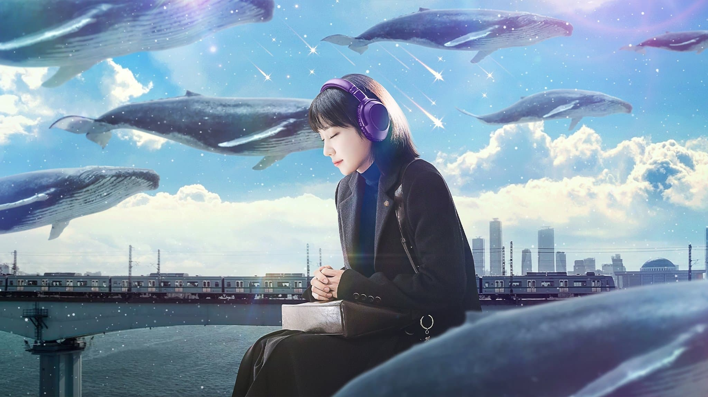

Other Focus :: ลิสต์บน Serializd | Let’s "Film" Favourite 2022
*ไม่ได้เรียงลำดับชัดเจน
*นับที่ดูจบสมบูรณ์
1) Koisenu Futari (NHK)
หาก "บ้านของหัวใจ" นั้นไม่ใช่คนรักในเชิง Sexual Relationship แต่เป็นคนรักในเชิงของช่วยเหลือเกื้อกูลกัน ช่วยผลักดันขับไสให้แต่ละได้ไปสู่ที่ที่ตัวเองอยู่แล้วมีความสุข ไม่จำเป็นต้องอยู่ด้วยกัน แต่ก็มีความสุขในแบบของตัวเอง
| อ่านบทความที่น่าสนใจจาก บันทึกซีรีส์ญี่ปุ่น |
2) Juvenile Justice (Netflix)
3) Shitsuren Meshi (Amazon Prime)
ดัดแปลงจากมังงะในชื่อเดียวกัน ว่าด้วยเรื่องของ มิกิ นักวาดการ์ตูนฟรีเปเปอร์ (วารสารแจกฟรีที่วางตามร้านต่างๆ - ถ้าใครนึกไม่ออกก็ประเภท flickz หรือ The Hollywood Reporter Thailand ที่เคยวางแจกตามโรงภาพยนตร์นั่นแหละ) ที่เขียน Shitsuren Meshi (เมนูคนอกหัก) จึงออกไปตามหาไอเดียต่างๆ จากคนอกหักที่ผ่านมาและผ่านไปในชีวิตของเธอเอง
ถึงแม้จะเป็นพล็อตทั่วๆไป แค่เปลี่ยนอาชีพเป็นอาชีพโน้นนี่นั่น มาจนถึงนักเขียนการ์ตูน แต่สิ่งหนึ่งที่ Shitsuren Meshi โดดเด่นและแย่งซีนมากๆ คือตัวละครสมทบที่เข้ามาเสริมสร้างเรื่องเพื่อให้มิกิไปวาดเรื่องและเหล่าสามหน่อซาโตะที่ออฟฟิศของฟรีเปเปอร์ที่มิกิทำงานให้นี่แหละ ประกอบกับเพลง アルペジオ (arpeggio) ของ Homecomingsที่ฟังแล้วชวนเคลิ้มอบอุ่นหัวใจ ตกหลุมรักได้ไม่ยากเลย
4) Bocchi the Rock! (CloverWorks)
ตํ่าสุดสู่สูงสุด(รึเปล่า)ของ Self-Esteem , ชอบตอนไปเที่ยวมาก แบบ ก. ล้านตัว รู้สึกใจฟูจัดๆ นิฮงจินเก่งในการทำอะไรแบบนี้จริงๆนะ
5) Renovation Like Magic (Kansai TV)
6) Extraordinary Attorney Woo (ENA)

ตลอด 16 ตอนของ Extraordinary Attorney Woo เล่าผ่านตัวละครหลักอย่าง อูยองอู ทนายสาวแอสเพอร์เกอร์ (Asperger’s Syndrome) ที่ถึงแม้จะขาดทักษะการเข้าสังคม แต่ทักษะความจำและความฉลาดหลักแหลมนั้นเป็นเลิศนั้น
อูยองอู จะเป็นตัวละครที่ชวนให้เราเอาใจช่วยไม่ว่าจะในเรื่องงานและเรื่องความรักแล้วขนาดนี้ไม่ได้เลย ถ้าหากขาดนักแสดงที่ดีอย่าง พัคอึนบิน ที่ช่วยสร้างตัวละครอูยองอูได้สมบูรณ์แบบไร้ที่ติ นอกจากนี้ในแต่ละคดี (ซึ่งภาพรวมจะจบภายใน 2 ตอน) ยังช่วยขยับขยายตัวละครต่างๆ ให้มีที่ยืนเป็นของตัวเองโดยที่ไม่ต้องไปแย่งซีนกันเองด้วยซํ้า ไม่แปลกใจว่าทำไมตอนฉายถึงมีกระแสดาวรุ่งขนาดนี้
7) Waru: Hataraku no ga Kakko Warui Nante Dare ga Itta? (Nippon TV)
ละครสล็อตฤดูใบไม้พลิประจำวันพุธช่อง NTV ปีนี้ โดยเรื่องนี้เป็นทั้งรีบู๊ตและรีเมคมาจากละครในชื่อเดียวกันที่ออนในปี 1992 เนื้อเรื่องมีความอัปเดตตามยุคสมัย ในแต่ละตอนก็ยังเป็นเรื่องที่นำมาออกมาเล่าได้อย่างน่าสนใจ ทั้งประเด็นชายเป็นใหญ่ในสังคม การถูก gaslighting ในที่ทำงานหรือแม้กระทั่งการหยิบผลเอฟเฟคจากเรื่องของโควิดผ่าน "100 ยุทธวิธีการพาตัวเองก้าวหน้าในการทำงาน" ภายใต้พล็อตรอมคอมพนักงานออฟฟิศทั่วๆไปที่ถูกเปลี่ยนไปจากเดิมเยอะ หลังจากนี้จะเล่าแยกเป็นตอนๆ ไปเป็น Stage อย่างที่ตัวเรื่องเล่า
| อ่านบทความฉบับเต็มบนเว็บไซต์ |
8) She Loves to Cook, and She Loves to Eat (NHK)
ดัดแปลงจากมังงะในชื่อเดียวกัน ว่าด้วยเรื่องราวของสาว OL ที่รักในการทำอาหารจนในบางทีก็ทำอาหารออกมาซะล้นเหลือ และด้วยสกิลอาหารที่เธอทำล้นเหลือนี่เอง ทำให้เธอชวนเพื่อนบ้านที่อยู่ใต้ชายคาอพาร์ทเม้นท์เดียวกันมากินข้าวกับเธอด้วยกันบ่อยๆ
นี่อาจจะม้ามืดประจำชีชั่นนี้สำหรับเรา เงียบๆแบบนี้ทีแรกนึกว่าไม่มีใครแปล แต่ก็มีจนได้ (แปลโดยเพจ แปลไทยตามใจหมี) ตอนละ 15 นาที ดูเพลินๆ ไปกับอาหารและพลังของความใส่สถานที่ท่องเที่ยว จุดพักรถหย่อมใจ และอาการที่จุใจชนิดที่ว่าถ้าไม่ยึดติดกับกรอบความ local แล้วยอมดัดแปลงแปรเปลี่ยน ทำได้แบบเขาไปนานแล้ว (แฮ่ม) ใครชอบ What Did You Eat Yesterday? ก็อาจจะถูกใจเรื่องนี้ได้ไม่ยาก
Manami Higa กับบทสาวออฟฟิศที่สกิลทำอาหารไม่เป็นสองรองใคร แต่ตัวเองก็มีเรื่องค้างคาใจอยู่ไม่ใช่น้อย และ Emi Nishino กับการแสดงครั้งแรกของเธอซึ่งทั้งสองตีความคาแรกเตอร์ของตัวละครให้เราประทับใจภายใน 2 ตอนโดยใช้ charisma ของตัวเองผสมกับคาแรกเตอร์อย่างเต็มที่ จนเอาใจช่วยตัวละครทั้งคู่ชนิด หวานขนาดนี้ แต่งเถอะค่า
9) Ore no Kawaii wa Mousugu Shohikigen!? (TV Asahi)
พล็อตดาดๆ ทั่วไปที่เล่าเรื่องของพนักงานหนุ่มสุดน่ารักขวัญใจสาวๆ "มารุยะ โคสุเกะ" วัย 29 ณ บริษัทเบียร์ยาโยอิที่สมบูรณ์แบบทั้งเรื่องการทำงานและความรัก แต่กลับกลายเป็นว่าก่อนโคสุเกะจะก้าวเข้าสู่เลข 3 ไม่กี่เดือน โชคชะตาก็ได้เล่นตลก เมื่อโคสุเกะได้เจอกับตัวเองในอนาคตแถมยังเตือนเจ้าตัวอีกว่า "อีกไม่นาน ความน่ารักของเธอน่ะ จะหมดอายุแล้วนะ" อะไรกัน ความน่ารักที่สั่งสมมาตลอด 29 ปีที่ผ่านมามันมีหมดอายุด้วยเหรอเนี่ย!?
ละครช่องอาซาฮิ สล็อตนี้ ดูได้เพลินๆ ไม่มีเนื้อเรื่องให้ชวนปวดหัวหรือตึงเครียด มีแต่จะตรึงคนดูให้อินไปกับความสัมพันธ์ในเรื่อง เวลาแต่ละตอนก็น้อย เหมาะแก่การนั่งดูฆ่าเวลาเป็นอย่างยิ่ง (เรื่องมี cameo จากเรื่องอื่นของช่องด้วยนะเออว่าไป สะดุดตาเว่อ)
การมีคนมอบโอกาสและมอบที่ยืนให้กับคุณแล้ว การยืนหยัดและฝ่าฟันไปด้วยกัน น่าจะเป็นบทสรุปของตอนจบที่น่ารักมากๆของชีชั่นนี้อีกเรื่องนึงเลย หลายคนมักต้องการหาพื้นที่ให้กับตัวเอง ไม่ได้ต้องการอะไรมาก แต่ต้องการแค่พื้นที่ที่ตัวเองจะได้อยู่กับคนที่สนิท คนที่ชอบและคนที่รักได้อย่างมีความสุข เอนจอยไปกับงานที่ทำ (โยชิเนะ เคียวโกะเวอรชั่นโรบอททั้งเท่ ทั้งน่ารัก ทั้งหล่อ เอาหัวใจไปเตอะ)
10) OLD ROOKIE (TBS)
ณ พื้นที่ตรงนั้น ฉันมีความฝัน 'I HAVE A DREAM!'
เรียวทาโร่ ชินมาจิ นักฟุตบอลวัย 37 ปีที่เคยไปถึงลีกระดับชาติถูกบังคับแขวนสตั๊ด หลังทีมตัวเองถูกยุบ ถึงว่าพยายามฝากตัวเองตามทีมฟุตบอลทีมต่างๆ แต่เมื่ออายุกลายเป็นเครื่องมือที่ทำให้มองผ่านๆ ได้ว่าอีกไม่กี่ปีก็ต้องถอนตัวอยู่ดี เมื่ออับจนหนทาง เขาสู้ชีวิตทำสิ่งต่างๆ ปั่นจักรยานส่งอาหาร เป็นพนักงานโบกรถในยามกลางคืนจนได้ไปเจอกับ งานากิ ประธานบริษัท Victory เอเจนซีในการจัดการนักกีฬา Sport Management และยื่นข้อเสนอสุดสำคัญที่ทำให้เขาได้กลับเข้าไปในวงการกีฬาอีกครั้ง!
ถึงแม้ OLD ROOKIE เล่าด้วยสูตรสำเร็จจ๋าๆของ TBS SPARKLE เลย แต่แปลกใจที่เรื่องนี้ไม่ได้ให้ความรู้สึก TBS SPARKLE สักเท่าไหร่ เหมือนให้ความรู้สึกเหมือนเขากำลังดัดแปลงมังงะจากโชเน็นจัมป์ซะมากกว่า และที่สำคัญอายาโนะ โกสุดยอดมาก แสดงสมบทบาท (ปกติจะไม่ได้ชอบการแสดงเท่าไหร่ ตั้งแต่ Ajin มาถึง MIU404)
เรื่องมันคลีเช่ แต่มันเวิร์คที่จะให้กำลังใจคนเอามากๆ และที่สำคัญ "อย่าไปตัดสินที่โปสเตอร์อีช่องนี้เลย" ไม่งั้นพลาดไปเยอะเลย ตัวเราก็เช่นกัน
11) Shizuka-chan and Papa (NHK)
โปสเตอร์ธรรมดาๆ มีท่าโพสของนักแสดงหลักสามคนอยู่ ว่าด้วยเรื่องของซิซูกะ ที่อาศัยกับพ่อของเธอผู้ที่เปิดสตูดิโอถ่ายภาพ และด้วยความที่พ่อของเธอหูหนวกตั้งแต่กำเนิด ทำให้เธอนั้นค่อนข้างปัญหาเมื่อเข้าทำงานกับที่ต่างๆเพราะเธอค่อนข้างจะอ่าน "บรรยากาศ" โดยรอบได้จนไปเกะกะขวางทางในสายตาคนอื่น แถมยังต้องลาหลายครั้งหลายคราเพื่อไปดูแลพ่อจนได้ออกจากงานอยู่หลายครั้ง จนกระทั่งเธอได้พบกับ มิชินากะ เคอิจิ ซึ่งไม่ค่อยอ่าน "บรรยากาศ" ที่ว่านั้นสักเท่าไหร่
สามตอนแรกต่อมนํ้าตาทำงานไวจนแอบเอะใจว่าหลังจากนี้จะเอายังไงต่อ ซึ่งกลายเป็นว่าสามตอนหลัง ก็ทำให้ไม่แน่ใจเหมือนกันว่าเพราะเพิ่งมาดูครึ่งหลังหลังเว้นช่วงไปรึเปล่า ถึงแอบกังขา Message point ช่วงหลังที่ว่าด้วยการทิ้งเมืองอันเป็นที่รักเพื่อนำไปสู่การพัฒนาในอนาคตข้างหน้า (เหมือนเชิงชี้นำอย่างบอกไม่ถูกโดยเฉพาะตอนสุดท้าย) แต่ถึงยังไงก็ตามก็ยอมรับได้ไม่ยากด้วยความที่เป็นสูตรสำเร็จว่าด้วยเป้าหมาย-ความฝันว่า Shizuka-chan to Papa อาจจะเข้าไปอยู่ในใจของใครหลายๆคน หรือการปล่อยเมืองที่ตัวเองรักออกไปจากมือเพื่อสิ่งที่ดีกว่าที่เหมือนกับการปล่อยลูกรักตัวเองไปสู่อนาคตที่ดีกว่า อนาคตที่ไม่ต้องจมปลักอยู่กับที่นี่ ที่เดิม ที่ๆต้องมาพบปะกับคนหน้าเดิม ร้านอาหารเดิมๆ กิจวัตรเดิมๆ ในเมืองที่เงียบสงบเช่นนี้
12) Guilty Flag - Shinhanin Flag : The Truth (Nippon TV)
ถึงพาร์ทแรกจะไม่ชอบเอามากๆ พอดูประวิงเวลาได้อยู่ ส่วนตัวพาร์ท 2 กลับกลายเป็นว่าค่อนข้างแนะนำนี้สุดๆ มีหลายอย่างที่ไม่คิดว่าคนเขียนบทจะหยิบใช้ element นี้กลับมาอยู่ตลอด ถึงแม้บางอย่างจะรีบยัดเยียดหรือเร่งสปีดเพื่อรวบปมช่วงโค้งสุดท้ายที่ต้องเฉลยออกมาให้หมดจนปล่อยเลยตามเลย
ถ้าคุณเบื่อและทรมานกับครึ่งหลังของ Anata no ban desu ที่เริ่มหมดมุก เห็นความครํ่าครวญของตัวเอกจนแอบลำไย เห็นความหน้าม้อของนิไกโดะต่อคุโรชิมะซํ้าแล้วซํ้าเล่า เรื่องนี้จะเป็นขั้วตรงกันข้าม เพราะครึ่งแรกของ Shinhannin Flag นั้นเต็มไปด้วยความน่ารำคาญ เล่าวนอยู่ในอ่างจนแอบคิดไปว่ามันหมดมุกที่จะเล่าแล้วรึเปล่า แต่ถึงกระนั้นมันก็ไปต่อใน Part 2 — The Truth โดยผลลัพธ์ออกมาค่อนข้างเรียกได้ว่าน่าประหลาดใจเลยก็ว่าได้
| อ่านบทความฉบับเต็มบนเว็บไซต์ |
13) INVISIBLE (TBS)
Invisible เต็มไปด้วยความอิหยังวะในแทบจะทั้งครึ่งแรก ถึงแม้ว่าจะพลิกกลับมา Balance มู้ดของตัวละครในช่วงครึ่งหลังได้ แต่ก็ทำได้แค่ประคองเรื่องไม่ให้เป๋ไปกว่านี้ ไม่ได้สร้างมิติให้กับตัวละครเพิ่ม กลายเป็นว่าอันนี้ทำให้การพยายามหักมุมตัวละครอีกรอบในครั้งที่ 3-4 ดูแบนราบ และเราไม่เชื่ออะไรอีกแล้ว พอเฉลยผู้บงการเรื่องทั้งหมดก็ดันไม่ร้ายเท่าตัวหลอกที่ผ่านมา เหมือนเป็นไฟนอลบอสที่ดูปราบยาก แต่เจอดาบ Enchant มึงร่วงไปทันที ดูจบก็จบแล้วจบกัน ไม่ได้ประทับใจอะไร
ตลอดการดู 10 ตอนของ Invisible นอกเสียจากการดำเนินเรื่องในช่วงไล่ล่าคนร้ายในรายชื่อจะดันไปเดจาวูกับ The Blacklist ยังไงชอบกลจะมีก็เพียงแต่การใส่ใจในดีเทลเล็กๆน้อยๆของตัวละคร "คิริโกะ" และเคมีของ Issei Takahashi กับ Ko Shibasaki แหละมั้งที่ช่วยแบกเรื่องได้ / นอกจากนั่น THEME ของเรื่องติดหูดี มีให้ฟังใน Spotify
เรื่องอื่นๆ ที่ดูในปี 2022
Fallen Rainbow - สายรุ้ง (one31)
Change2565 ยังคงมาตราฐานโปรดักชั่นพี่ฉอดได้เป็นอย่างดี แต่น่าเสียดายที่องค์ประกอบในเรื่องผสมกันแล้วดูแปลกประหลาด ทั้งการดำเนินเรื่องที่ยืดยาด เพราะมัวแต่ตัดบิ้วท์โน้นนี่นั่น / นักแสดงบางคนเล่นโอเวอร์จนหลุดจากคนอื่น ได้ข่าวว่าเป็นการคืนฟอร์มของคนนี้ด้วย ตอนแรกก็พอได้แหละ ชอบด้วย ดูบ้านแตกดี แต่พอก้าวข้ามเป็นตอนเลขสองหลักแล้วเละเทะเลย พอปัญหารุงรังมาถึงตอนจบกลับทำให้ที่อืดไปแล้วอาการหนักกว่าเดิมโดยการไปเร่งเส้นเรื่องแบบหวังผลทั้งที่โจทย์ตัวเองแต่แรกคือการสืบสวนหาคนที่วางบอมบ์พ่อแม่ ทำให้ขาดความสมเหตุสมผล หากจะให้พูดจุดโดดเด่นที่ได้หลังการดูนั่นคือการเปิดแคสหลัก-รอง (ซึ่งแบกไหวหมด แต่บทไม่ไหว) และการใส่ฉาก Post Credit ไม่ว่าจะด้วยแรงจูงใจอะไรก็ตาม มันดี แต่มันต้องดีทั้งหมดดิ ไม่ใช่เอา Post Credit มาชูทั้งเรื่อง(โว้ย)
Suptar 2550 - ซุปตาร์ 2550 (3HD)
ละครจาก Citizen Kane ที่ปีที่แล้วก็มีดวงตาที่ 3 ส่วนตัวแล้วไม่ค่อยชอบเท่าไหร่ เรื่อยเปื่อยดูไม่มีจุดหมาย ดูได้สามตอนละเลิกดู - แต่เรื่องนี้ทวงศักดิ์ศรีค่ายนี้ได้เยอะเลย โดนด่ามาเยอะว่าเป็นค่ายเด็กสปอยล์ช่อง ทั้งการวางเส้นเรื่องหลักขนานไปกับเส้นเรื่อง sub plot ในแต่ละตอนควบคู่ไปกับการอัด fan service เคน-แอน ยับๆ กำกับภาพสวยๆ แต่ก็มีหลุมดำให้เราหลับอยู่เพียบหากคุณไม่ได้อินกับคู่นี้ กว่าจะสนุกจริงๆ ก็ล่อไปสี่ตอนสุดท้ายที่เน้นหายนะของกองถ่ายที่ต้อง "ถ่ายละครพร้อมกับออนไปด้วย" และ "การชนของละครคู่แข่ง ซึ่งต้องยอมรับว่าสนุกจริง" -ยกเว้นตอนจบ อะไรวะเนี่ย- / สำหรับพล็อตแบบนี้ ถ้าเปลี่ยน Format ละครชั่วโมงครึ่ง เป็นชีรีส์น่ารักๆ 30-45 นาทีแบบที่ TV Tokyo หรือ MBS ทำก็น่าจะถูกพูดถึงไปอีกนาน - เพราะความที่ยาวขนาดนี้ทำให้เกิดแผลใหญ่ อารมณ์เดียวกันกับ ทีใครทีมันส์ ที่เป็นละครแนวอาชีพที่ใส่เส้นเรื่องโน้นนี่นั่นจนครึ่งหลัง ถ้าไม่ได้แคสแบก ก็น่าจะเอาไม่อยู่จริงๆ
BAD GUYS ล่าล้างเมือง (True CJ Creation)
วางใจทีม TRUE CJ ได้อยู่แล้วในการดัดแปลงชีรีส์เกาหลีให้เข้ากับบริบทไทยสไตล์ บางเรื่องอาจจะเปลี่ยนจนดูเหมือนไม่ใช่เรื่องเดียวกัน หรือบางเรื่องก็ดูจืดตั้งแต่การโปรโมทจนเหมือนเป็นชีรีส์ช่องทรูทั่วไปๆ (เช่นเรื่อง Sing Again ที่ฉายก่อน BAD GUYS) / ก็สนุก สิ่งที่โดดเด่นที่สุดคงจะหนีไม่พ้นงานภาพโดดเด่นให้ความดุดันเสริมไปกับเรื่อง กับการแสดงที่ดุดันของก๊อต จิรายุและเอ็ม สุรศักดิ์ รวมไปถึงนักแสดงสมทบและคนในทีมหมาบ้าอีกหลายคน อาจจะมีบางจุดที่ว่าไม่น่าปล่อยมาได้ เช่น เสียงไมค์ตีกับลมทะเล หรือวางซีนดูโดดไม่ต่อเนื่องกัน
Ichikei Crow – The Criminal Court Judges (Fuji TV/2021)
เมื่อหลักฐานไม่พอ ก็ต้องออกสืบ! ซากามะ มิจิรุ อัยการมือใหม่ที่ถูกย้ายมายังศาลอาญาโตเกียว (หรือที่เรียกในนามว่า 'อิจิเค') เพื่อมารับมือกับ อิรุมะ มิจิโอะ อดีตทนายความที่ผันตัวมาเป็นอัยการ ตัวต้นเรื่องที่ทำให้ศาลอิจิเคนี้มีเคสค้างความนับร้อยเคส เพราะมิจิโอะคนนี้ออกไปสอบสวนเองมันทุกคดีเพื่อให้ตัดสินใจผิดพลาดน้อยที่สุดและเป็นธรรมมากที่สุด สร้างความปวดหัวให้กับมิจิรุ ทนายและอัยการเอาเรื่อง แต่เมื่อนับวันเข้า อดีตและสาเหตุที่ทำให้มิจิโอะได้เป็นอัยการจนถึงตอนนี้ก็ดูเหมือนใกล้เข้ามาทุกที
ซอฟท์ไปหน่อย แต่สนุกๆ Ryo Tanaka อาจจะได้แฟรนไซส์ใหม่หลัง The Confidence Man JP แล้วล่ะ งานดีขนาดนี้
Crazy Love (KBS2)
บางที การศึกษาในระบบก็เหมือนเนื้อร้ายที่ไม่มีวันจบสิ้นซะที
ดูเผินๆ Crazy Love อาจจะเหมือนละครรอมคอมขายขำขายความโรแมนติกดาดๆของเกาหลี (เรื่องอื่นไม่ได้ดูเลยฝั่งเกาหลี พึ่งมาไล่ดูเรื่อยๆช่วงหลังอัยการแสบ) เหมือนลูกอมแสนหวาน แต่เมื่อเรากัดเข้าไป ลูกอมแสนหวานก้อนนั้นอาจจะทำให้เราเห็นภาพแทนของคนที่ทรมานกับสังคมเกาหลี ส่วนนึงของระบบการศึกษาของเกาหลี การทำงานที่กดดันเกินรับไหวของวัฒนธรรมในองค์กร เป็นลูกอมฉาบด้วยยาพิษที่ดูน่าค้นหา แต่ก็ให้อะไรหลายอย่าง
เรื่องเกี่ยวกับประธานเจ้าของติวเตอร์สอนพิเศษที่เย็นชา หน้าด้าน มั่นหน้ามั่นโหนก "โนโกจิน" ทำให้เลขาทนไม่ไหวลาออกทุก 3 เดือน แต่เลขาคนล่าสุดไม่ใช่แบบนั้น ลีชินอา ทนไม่ไหวที่ตัวเองต้องมาทนกับประธานที่เห็นแก่ตัวและเอาแต่ใจ ทำให้เธอแอบเข้าบ้านของประธานเพื่อปาใบลาออกแบบเฟี๊ยสๆ ไปๆมาๆประธานจับได้ ลีชินอาหนี หลังนั้นชุลมุนขึ้นไปอีกเมื่อ"ศัตรู"ที่ประธานโนสร้างไว้เริ่มโผล่ขึ้นมาเอาคืนเป็นระยะๆ ส่วนเธอเองก็จำยอมต้องรับผิดชอบสิ่งที่ตัวเองก่อไว้และไม่ได้ก่อไว้ครึ่งหลังโดยการโกหกว่าเธอเป็นคู่หมั้นของโนโกจิน
(เปิดเผยเนื้อหาสำคัญของเรื่อง)
ตอนแรกหยิบมาดูเพราะเห็นทีเซอร์ขายขำกันจัดๆ (โปสเตอร์ก็ขายขำ ไม่เชื่อมองโปสเตอร์ดิ ดูยังไงก็แนวนั้น) แต่พอดูไปเรื่อยๆ ครึ่งหลังมาหักโค้งเพราะตรงสตอรี่ของ "ศัตรู" ทางด้านการศึกษาของเกาหลีมีทั้งอดีตซัพพอร์ตเตอร์ที่ผลักดันโนโกจินที่อยากขึ้นมาเป็นผู้นำทางด้านการเรียนเสริมแทนเจ้าตัว ทั้งเรื่องขโมยข้อสอบ ทั้งผู้ปกครองที่ฝากเด็กเสริมพิเศษเพื่อให้เด็กดีขึ้น พอติวเตอร์บอกกับผู้ปกครองว่าเด็กก็ควรจะค้นคว้าและสนใจด้วยตัวเองก็โดนทั้งด่า ทั้งขู่ว่าจะทำให้ติวเตอร์ไม่ได้กลับมาสอนเด็กอีก (บ้านเราก็มีแบบนี้เหมือนกัน แต่ตรงข้าม แหะๆ) ยังไม่นับกับเรื่องนิสัยเย็นชาของโนโกจินที่ทำให้สารพัดอดีตเลขาจ้องตามจองผลาญประธานหรืออีโก้ของ "ลาสบอส" ของเรื่องที่ไม่สมกับลาสบอส (แต่เห็นแก่ตัวเหี้ยๆ หลอกใช้ผู้หญิงเพื่อป้ายความผิด มาถึงตอนจบก็ยังไม่เข้าใจอีก เฮ้อ)
ทั้งหมดหากจะพูดว่าตัวละครในเรื่องไม่ได้เป็นเหยื่อของการศึกษาในระบบก็คงจะไม่ได้เลย ในเมื่อระบบการศึกษาของเกาหลีพยายามให้เด็กแข่งขันกันยิบยับ (หากสนใจว่าแข่งขันกันสูงจริงมั้ย ลองชม Reach for the SKY) แต่ถ้าหากมองย้อนกลับไป โนโกจินคงไม่ได้เป็นประธานติวเตอร์ชื่อดังหากไม่ได้รับการสนับสนุนจากคนรอบข้างที่มีฐานะสูงกว่าที่มองเห็นแววในตัว หรือจะลีชินอาที่ไม่ได้รับการผลักดันเป็นครูสอนติวเตอร์ด้วยบุคลิคหน้ากล้องของเธอ ต้องมาเป็นเลขาจนเมื่อโนโกจินมองเห็นศักยภาพ (หรือมันคลั่งรัก ไม่แน่ใจเหมือนกัน) ถึงพยายามผลักดันให้เธอเป็นติวเตอร์ให้ได้เหมือนกัน เห็นมั้ย ก็พูดได้เต็มปากเลยว่าในเรื่องล้วนเกี่ยวกับกางการศึกษากวดวิชาไม่ทางใดก็ทางนึง (เว้น แบค ซู-ยัง ไว้คนนึง ดูยังไงจุดประสงค์ที่เข้ามาทำติวเตอร์ก็คลุมเครือ แต่แน่ๆเลยคืองอนที่โนโกจินไม่คืนดี เป็นตัวละครที่มีส่วนในเรื่องแต่ก็เป็นไม้ประดับสุดๆ ที่น่าสนใจคือพ่อของแบคนี่แหละที่พยายามบีบโนโกจินเรื่องการไต่เต้าขึ้นมาจนได้ดั่งฝัน)
SUPER RICH (Fuji TV/2021)
ซุปาริจิ เป็นอีกหนึ่งตัวอย่างในการพยายามจะเป็นทุกอย่าง พยายามจะหาทิศทางใหม่ๆโดยสร้างสถานการณ์สำคัญให้กับเรื่องตลอดเวลา แต่ก็ยืนฝืนตัวเองจนไม่ไหวเลยสักอย่าง แล้วผลจากการที่ "พยายามจะเป็นทุกอย่าง" นี่แหละทำลายมู้ดโดยรวมของเรื่องเป็นโซ่ตรวน เล่น time lapse โดดไปเดือนสองเดือนยันปีนึงข้ามไปข้ามมา (ในตอนจบลากมาจบที่ธันวาคม 2021) พริบตาเดียวคือจบแล้วเหรอ แค่นี้อะนะ แล้วระหว่างทางก็ชวนอิหยังวะซะเหลือเกิน แต่ก็ดูเอาขำๆได้เรื่อยๆ นี่ก็ดูต่อเพราะอยากรู้ว่ามันจะไปลงตรงไหน ระหว่างนั้น ครับ ขอบคุณครับ เหมือนจะได้อะไรที่เป็นข้อคิดให้เราไปปรับใช้บางเช่นแยกเรื่องธุรกิจกับความเป็นเพื่อนออกจากกัน งานส่วนงานโดยเฉพาะส่วนโค้งสุดท้ายในประเด็น TOB เทคโอเวอร์ที่ดูเหมือนคนเขียนบทแบบ "มาว่ะ กูเอาจริงละ" นี่จับทางตั้งแต่เฉลยว่าเป็นแผนสปายแฝงตัวว่ามันต้องโอนถ่ายทรัพย์สินหลักไปที่ใหม่ที่ไม่ใช่ที่เดิมแน่ๆ แล้วก็อย่างที่คิดไว้จริงๆ นี่แหละครับ "พยายามจะเป็นทุกอย่าง" แต่ถึงอย่างไร in support character arc ในเรื่องนี้ก็ไปวัดไปวาได้อยู่โดยเฉพาะลุงบก. ค่ตดี และก็น้องฝึกงานที่ time lapse จนไม่ได้ฝึกงานแล้วมั้งนั่น
OTHERS
Ase to Sekken (MBS/2022)
MIU404 (TBS/2020) | อ่านฉบับเต็มบน shots note • 2022 |
Oyabaka Seishun Hakusyo (NTV/2020)
Tengoku to Jigoku ~Psycho na Futari~ (TBS/2021) | อ่านฉบับเต็มบน shots note • 2022 |
Kotaro Live Alone (TV Asahi/2021) × Kotaro Live Alone (Netflix/2022) | อ่านฉบับเต็มบน shots note • 2022 |
Higuma (NHK/2020) × Higuma 2 (NHK/2021) | อ่านฉบับเต็มบน shots note • 2022 |
Koi Desu: Yankee-kun to Hakujou Garu (Fuji TV/2021) | อ่านบทความที่น่าสนใจจาก บันทึกซีรีส์ญี่ปุ่น |
Still Watching —
Saiai — Dearest (TBS/2021)
Yamegoku: Yakuza Yamete Itadakimasu (TBS/2015)
My Family (TBS/2022)
Life With an Ordinary Guy Who Reincarnated Into a Total Fantasy Knockout (OLM Team Yoshioka/2022)
Murai no Koi (TBS/2022)
Boyfriend Kourin! (TV Asahi/2022)
First Penguin! (Nippon TV/2022)
Silent (Fuji TV/2022)
Elpis: Kibou, Aruiwa Wazawai (Fuji TV/2022)
Kyoso no Bannin (Fuji TV/2022)
THAI DRAMA
ใต้หล้า (one31/2022) | อ่านฉบับเต็มบน shots note • 2022 |
ทายาทพันธุ์ข้าวเหนียว (one31/2022)
รากแก้ว (3HD/2022) | อ่านฉบับเต็มบน serializd |
ANIME
Komi-san wa, Comyushou desu. (OLMxNetflix/2022)
Kotaro Live Alone (Netflix/2022)
Hakozume: Kouban Joshi no Gyakushuu (Funimation/2022) | อ่านฉบับเต็มบน shots note • 2022 |
Aharen-san wa Hakarenai (Felix Film)